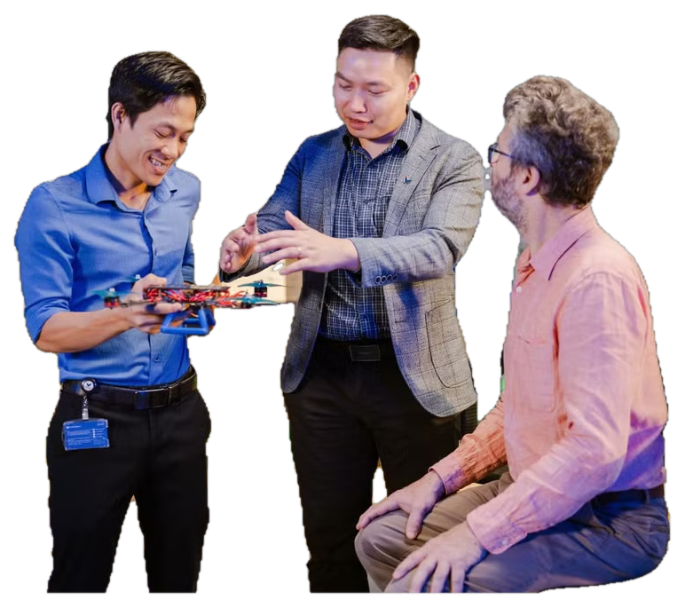

Proceedings of Teachers' Day 2026 · Hà Nội, Việt Nam · 20/11/2026
Từ Vĩnh Phúc đến Quả Cầu Vàng: Nhìn lại các công trình nghiên cứu của TS. Lê Duy Dũng
1Học viên thạc sĩ Khoa học Máy tính, Trường Đại học VinUni
Tóm tắt
TS. Lê Duy Dũng nghiên cứu hệ gợi ý, truy xuất thông tin và phân tích trực quan. Bài viết này tổng hợp các công bố của thầy từ năm 2016 đến nay, dựa trên dữ liệu OpenAlex và thông tin báo chí. Theo OpenAlex, thầy có 43 công trình với 1.056 lượt trích dẫn, chỉ số h bằng 13. Theo báo chí năm 2025, thầy có 5 bài tạp chí quốc tế Q1 và 21 bài hội thảo quốc tế, và đã chủ trì 4 đề tài nghiên cứu.
Từ khoá: hệ gợi ý, học liên kết, tối ưu đa mục tiêu, AI cho không gian sống.
1 Trích dẫn qua các năm
Hình 1. Số lượt trích dẫn mỗi năm theo OpenAlex (2026 tính đến tháng 11).
“Khoa học chỉ thực sự có ý nghĩa khi bước ra khỏi phòng thí nghiệm, chạm tới cuộc sống và tạo ra thay đổi tích cực cho con người.” [ý của TS. Lê Duy Dũng, theo VUSTA, 10/2025]
| Công trình | Trích dẫn | h-index | i10-index |
|---|---|---|---|
| 43 | 1.056 | 13 | 16 |
2 Một số công bố tiêu biểu
- D. D. Le, H. W. Lauw. Euclidean Co-Embedding of Ordinal Data for Multi-Type Visualization. SDM, 2016.
- D. D. Le, H. W. Lauw. Indexable Bayesian Personalized Ranking for Efficient Top-k Recommendation. CIKM, 2017.
- D. D. Le, H. W. Lauw. Stochastically Robust Personalized Ranking for LSH Recommendation Retrieval. AAAI, 2020.
- D. D. Le, H. W. Lauw. Efficient Retrieval of Matrix Factorization-Based Top-k Recommendations: A Survey. JAIR, 2021.
- L. P. Hoang, D. D. Le, et al. Improving Pareto Front Learning via Multi-Sample Hypernetworks. AAAI, 2023.
- N.-H. Nguyen, …, D. D. Le, K.-S. Wong. Towards Efficient Communication and Secure Federated Recommendation System via Low-rank Training. WWW, 2024.
- H. Q. Dao, Y. Deng, D. D. Le, L. Liao. Broadening the View: Demonstration-augmented Prompt Learning for Conversational Recommendation. SIGIR, 2024.
- V. V. Hao, …, D. D. Le, T. Nguyen-Dang. Finding Environmental-friendly Chemical Synthesis with AI and High-throughput Robotics. JSAMD, 2024.
- H.-D. Kieu, …, D. D. Le. Enhancing News Recommendation with Hierarchical LLM Prompting. WWW, 2025.

Hai năm liền đoạt giải